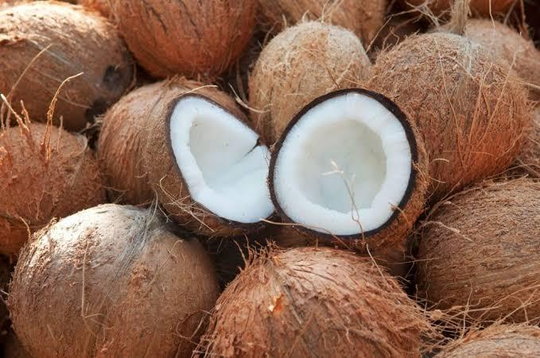
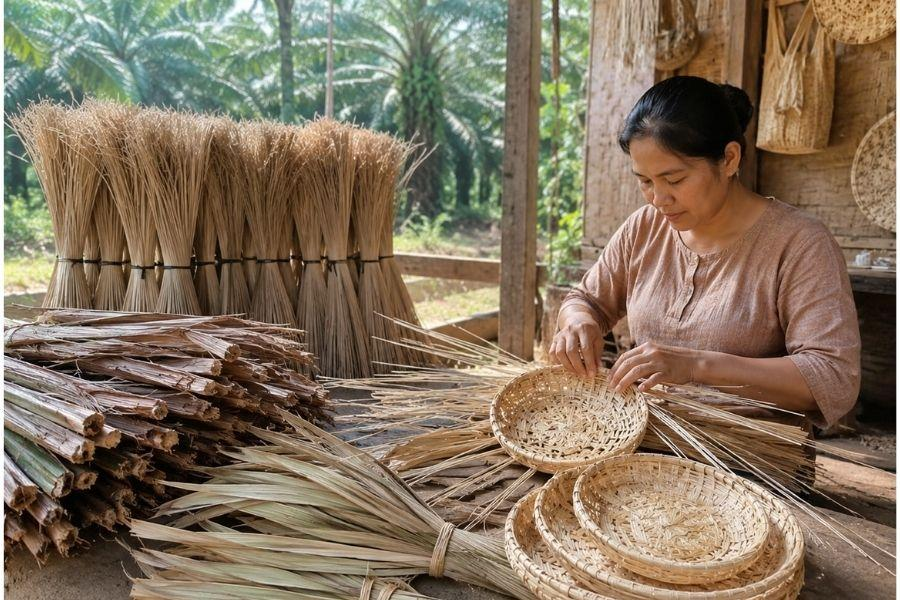
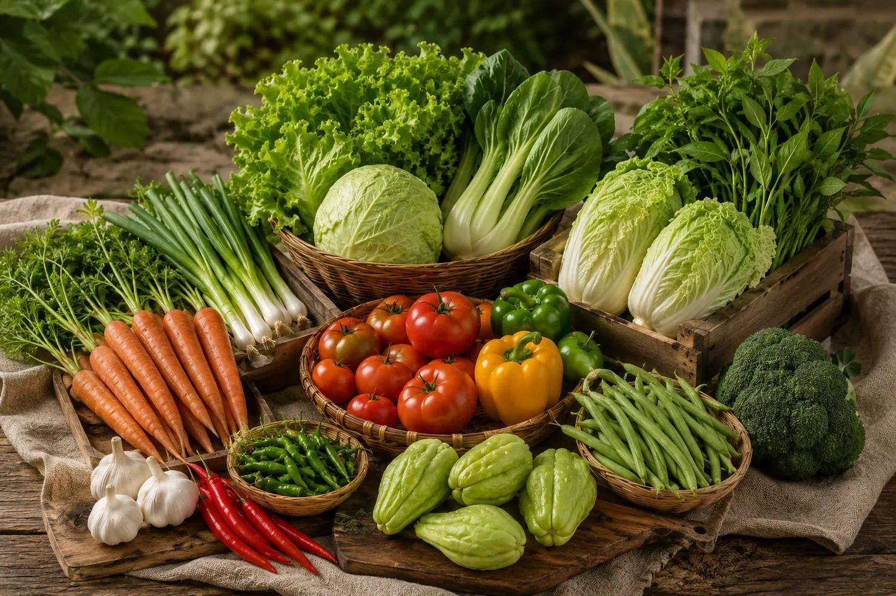

PT NUSANTARA GLOBAL TRADERBRIDGING INDONESIA TO THE WORLDPT NUSANTARA GLOBAL TRADERBRIDGING INDONESIA TO THE WORLD
PT NUSANTARA GLOBAL TRADERBRIDGING INDONESIA TO THE WORLDPT NUSANTARA GLOBAL TRADERBRIDGING INDONESIA TO THE WORLDPT Nusantara Global Trader is an Indonesia-based trading company connecting international buyers with local farmers, artisans, SMEs, producers and business partners.
Explore Our ProductsRequest a QuotationBased in Ciamis, West Java, PT Nusantara Global Trader develops trading opportunities for selected Indonesian commodities, coconut-based products, handicrafts and locally sourced goods.
We build connections with farmers, collectors, cooperatives, artisans, SMEs and producers, coordinating sourcing according to buyer specifications, availability and agreed quality requirements.
Our approach is built on clear communication, responsible sourcing, practical coordination and long-term business relationships.
Our leadership and business activities reflect our commitment to building trusted partnerships and connecting Indonesian products with global markets.

Leadership of PT Nusantara Global Trader.

Activities and engagement with business partners.
Availability, specifications, minimum order quantities and supply schedules are confirmed individually for each inquiry.

Mature and semi-husked coconuts, copra and selected coconut-derived products, subject to supplier availability and export requirements.

Handwoven tissue boxes, file and book organizers, and household accessories made by Indonesian local artisans.
Coconut sugar, palm sugar, granulated coconut sugar and selected agricultural and plantation commodities.
Selected Indonesian coffee, tea and cocoa products sourced through local suppliers and business partners.

Selected products from Indonesian SMEs, farmers and producers, subject to buyer requirements.
Inquiry-based procurement coordination for hematology analyzers, microscopes, centrifuges, photometers, reagents and consumables.
Identifying suitable local suppliers and products based on buyer specifications, availability and agreed requirements.
Coordinating with farmers, artisans, SMEs and producers on product details, quantities, pricing and schedules.
Working with relevant service providers on packaging, inspection, documentation and shipment arrangements.
Every order is assessed individually. Final terms are confirmed in a written quotation or sales agreement.
1. Send an Inquiry
Share product, specifications, quantity and destination.
2. Review & Quotation
We check sourcing options and provide an offer subject to confirmation.
3. Order Confirmation
Specifications, payment terms, delivery terms and schedule are agreed in writing.
4. Sourcing & Preparation
Products are coordinated with suppliers and relevant partners.
5. Delivery Coordination
Shipment follows agreed terms and transaction documents.
Company identifiers are provided for business reference. Product-specific permits, registrations and certifications are confirmed separately where applicable.
Company registration does not by itself imply that every product is certified or authorized for export, import or distribution. Applicable permits, standards and destination-market requirements are checked for each transaction.
For product inquiries, supplier partnerships, sourcing requests and quotations, please contact our team.
WhatsApp: +62 813-9503-5747Email UsCiamis, West Java, Indonesia